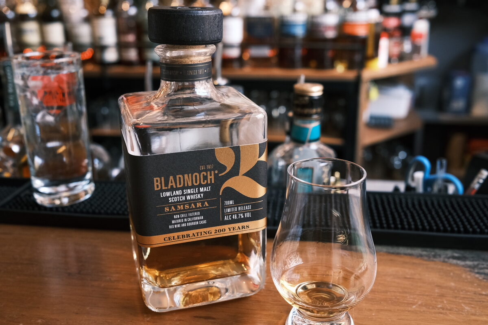

Bladnoch "Samsara" 46.7% (Californian red wine and bourbon)
One of Bladnoch’s many bottlings… can’t keep my head around it all.
Colour Gold.
Nose Quite green, stemmy. Grassy, Floral. Raisins and dates. Toffee apples. Jelly snakes (hello wine!). Brown sugar. Underripe fruits and heavy cream.
Palate Very sweet, sugary. Dried fruits and that astringency, stemminess. A little watery. Hot and spicy, oak spices.
Finish Lollies and artificial fruit flavours. Typical wine cask. Sweet cherries. Moderate.
Comments Not a bad drop, but rather uninspiring. Wine influence is not overdone. Nice grassy and floral notes. 79/100.

Posted by Dominic on 01 Jun 2021